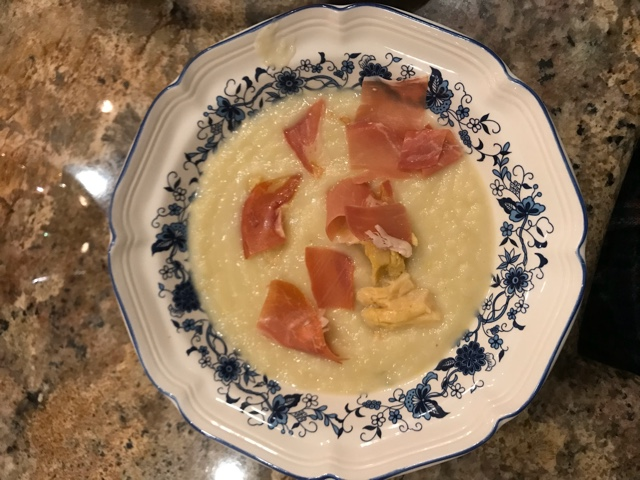

I find that cream soups tend to work during any time of year. More water-based soups--such as the borscht recipe--lend themselves to cooler, colder weather. Something like this simple white asparagus cream soup work well no matter the weather.
This one isn't hard at all. Total prep and cooking time is around 30 minutes or so, depending how fast you can chop potatoes and toss around ingredients. Let's dive in.

Ingredients
1 jar white asparagus
Salt
Olive oil
1 whole onion
1 stalk celery
1 whole garlic clove
1 medium potato
Jamon, or any other cured and thinly sliced ham
Steps
Begin by washing your vegetables before cutting the onions, garlic, and celery into small pieces. You don't necessarily need them to be minced or too small.
Put a pan on the stove. Add olive oil and bring to medium heat.
Add onions to pot and cook until clear.
Cut the potatoes into medallions. Add these to the pan with the onions and cook for 5-7 minutes.
Slice the white asparagus and add to the pan, leaving some of the tips to be used later on.
Cook all of this down for about 15 minutes or until the ingredients are nice and soft.
Once 15 minutes have passed remove the food from the pot. Place all of this into a blender. Blend into a cream, aiming for a medium-thick consistency.
Scoop servings into bowls, adding jamon or ham as well as the asparagus tips to the top for a nice presentation and extra oomph.